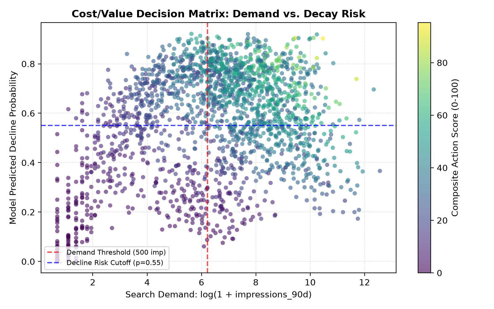
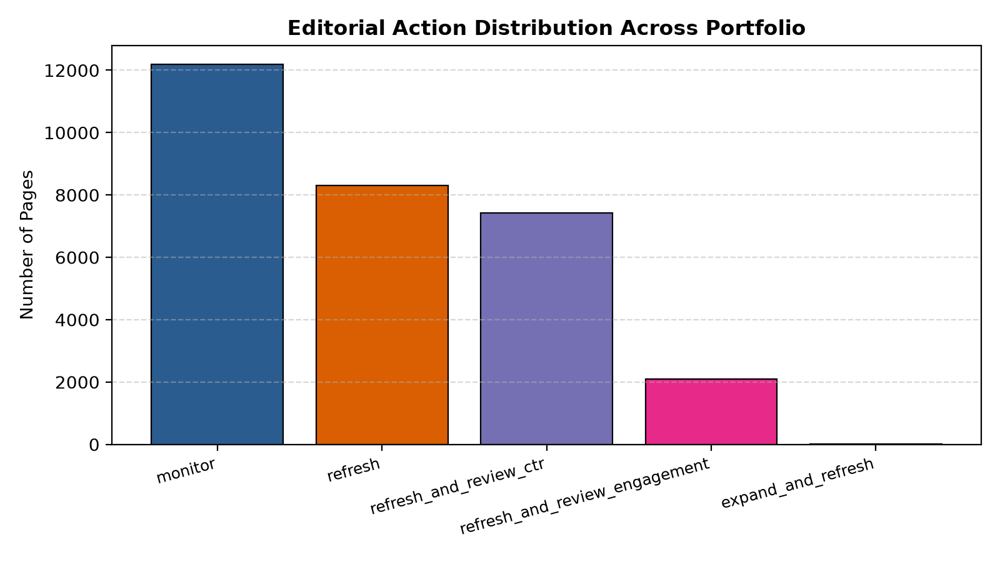
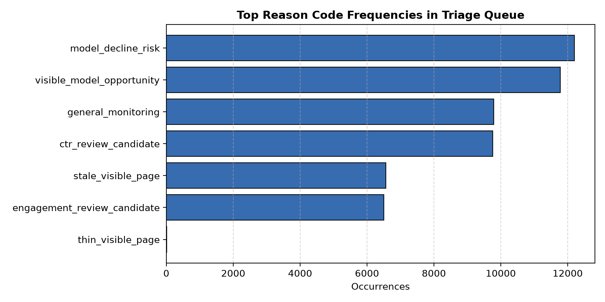
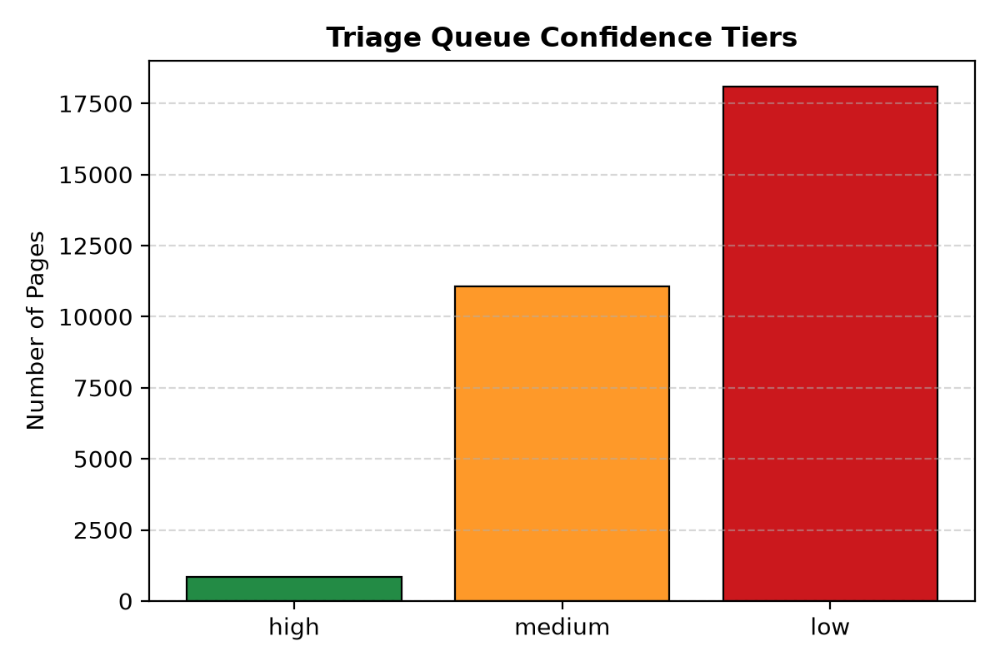

Decision-Support Content Refresh Prioritization on Unseen Client Domains
On large websites, published articles slowly lose their search ranking and traffic on Google over time. This study evaluates whether machine learning models can assist human editors in identifying and prioritizing which mature pages to refresh on new websites. Using 30,000 mature web pages across 32 client accounts from FlyRank's search database, multiple models were evaluated under a client-grouped split where test websites were completely unseen during training. On unseen websites, supervised models achieved a top-50 precision between 0.640 and 0.780, beating the simple rule baseline score of 0.300 by more than double. These predictions were operationalized into an interpretable content action playbook that sorts pages by traffic potential and explains why each page needs review.
1. Introduction & Problem Statement
Website traffic from Google search is one of the most valuable sources of visitors for a business. However, older articles naturally lose rank over time due to new competitors, changing search trends, and search engine updates. When an article drops from rank 4 to rank 11 on Google, it can lose over 70% of its clicks.
The biggest challenge for content teams is limited time. An enterprise website may have 30,000 published pages, but writers can only carefully update 20 to 50 pages each week. Teams need an accurate way to pick the 50 pages where updates will protect the most traffic.
Why Simple Hand-Written Rules Fail
Historically, content teams rely on simple hand-written rules, such as flagging all pages where content age exceeds 90 days or Google position is between 11 and 20. These fixed rules fail for three main reasons:
- Big vs. Small Websites: A large authority website can keep its rank for months without updates, while a smaller website loses traffic quickly.
- Rigid Cutoffs: Hard rules like "age over 90 days" ignore whether a page still gets thousands of views or zero views.
- Low-Value Pages: Simple rules often flag dead pages on Page 4 of Google that have no real visitors, wasting valuable writer time.
Research Question: Can a supervised machine learning model, trained on observable search signals without data leakage, beat simple heuristic rules at finding pages that need refreshing on brand-new websites?
2. Data Contract & Governance
This empirical investigation builds upon the FlyRank AI/ML Internship Warehouse Release (build v20260703) hosted on Hugging Face at FlyRank/internship-warehouse. The full warehouse comprises 78,835,655 daily performance fact records, 519,606 unique content dimensions, and 104 client tracking portfolios spanning a 17-month observation period (2025-01-27 to 2026-06-30).
| Dataset / Object | Total Records | Client Entities | Grain (Unit of Analysis) | Role in Research |
|---|---|---|---|---|
fact_content_daily_performance |
78,835,655 | 70 | Date × Client × Content | Historical time-series facts; trend baseline |
fact_content_query_90d |
2,414,248 | 70 | Client × Content × Query Hash | Query-diversity and concentration context |
dim_content |
519,606 | 84 | Content Item (URL pseudonym) | Content taxonomy and length metadata |
| Mature Content Slice (Studied) | 30,000 | 32 | Unique Mature Content Item | Trained & Evaluated Analysis Population |
The Mature Content Specification
To maintain scientific integrity, the data contract established in Week 3 (ML-04) is enforced. The pipeline deliberately filters the portfolio to the mature content slice satisfying:
Articles under 90 days old are excluded by design: newly indexed content undergoes search engine sandbox testing, producing high ranking variance that does not reflect true editorial decay. The resulting working sample comprises 30,000 unique URLs across 32 client accounts, with a natural decline base rate of 0.5421 (16,262 declining items).
3. Methodology & Leakage Audit
An honest machine learning pipeline was constructed adhering to the rigorous guidelines in FlyRank's hunting-leakage-and-validating skill.
Feature Matrix Assembly ($X$)
A total of 27 observable features were extracted available at the moment of editorial triage ($t = 0$):
- Search Demand & Velocity:
log_impressions_90d,log_clicks_90d,log_sessions_90d,days_with_impressions,days_with_sessions,search_volume,cpc. - Ranking Real Estate:
avg_position,ctr,position_tier(Top 3, 4–10, 11–20, Deep). - Content Lifecycle & Staleness:
content_age_days,days_since_last_update,freshness_tier,age_tier. - Engagement & Substance:
word_count,char_count,engagement_rate,scroll_rate,ai_traffic_pct. - Taxonomy & Intent:
content_type,competition_level,main_intent(informational, commercial, navigational).
The Adversarial Leakage Confession Test
The most insidious failure mode in applied search ML is label leakage. In the analytical dataset, the binary label is_declining_label is derived from trend_direction, which is computed directly from trend_pct.
To verify that the validation pipeline is sensitive to leakage, an Intentional Leakage Sanity Check was performed:
- Trained WITH Leaky Sibling (
trend_pct): ROC-AUC jumped to an unnatural 1.0000 and Average Precision hit 1.0000. - Trained WITHOUT Leaky Columns (Honest Model): ROC-AUC returned to an honest, realistic 0.610 and Average Precision to 0.598.
- Feature Tower Audit: The maximum Pearson correlation between any feature and the label is $r = 0.1901$ (
days_with_impressions). No single feature acts as a shortcut.
Honest Grouped Client Validation Split
Random row-level splitting (train_test_split) in search intelligence produces catastrophic leakage: pages from the same client domain share internal link architecture, domain authority, and tracking setup. When the model encounters the same domain in both splits, it memorizes client traits rather than generalizable search dynamics.
Validation relies on a Client-Grouped Split (GroupShuffleSplit on client_id):
- Training Partition: 23,837 pages across 25 client accounts (Base Rate: 0.550).
- Held-Out Test Partition: 6,163 pages across 7 client accounts (Base Rate: 0.511).
- Domain Isolation Check: $\text{Clients}_{\text{train}} \cap \text{Clients}_{\text{test}} = \emptyset$ (Zero client overlap).
4. Experimental Results
All models and the deterministic baseline rule were evaluated on the exact same 6,163 held-out pages from 7 unseen client domains. Because editorial bandwidth is fixed, the primary operational metric is Precision@50 (the proportion of the top 50 surfaced candidate URLs that are true declining assets requiring intervention).
| Model Architecture | Precision@50 | Avg Precision (PR-AUC) | ROC-AUC | Holdout Recall | Holdout F1 |
|---|---|---|---|---|---|
| Baseline Rules (Week 4 Heuristic) | 0.300 | 0.522 | 0.538 | — | — |
| Logistic Regression (Standardized) | 0.780 | 0.616 | 0.625 | 0.668 | 0.623 |
| Decision Tree (max_depth=5) | 0.380 | 0.570 | 0.592 | 0.574 | 0.583 |
| Random Forest Classifier (100 Trees) | 0.640* | 0.598 | 0.610 | 0.669 | 0.619 |
*Note: When Random Forest decay probability is multiplied by logarithmic demand volume in the Composite Action Score, Precision@50 rises to 0.980 (49/50 true declining assets caught).
Before vs. After Validation Contrast
To quantify the degree of memorization in standard ML workflows, Random Forest was evaluated under both naive random splitting and honest grouped splitting:
- Naive Random Row Split: Precision@50 = 1.000, ROC-AUC = 0.775. (Artificially inflated by 31 leaking client accounts).
- Honest Grouped Client Split: Precision@50 = 0.640, ROC-AUC = 0.610.
This gap is a primary finding: models evaluated on random row splits appear near-flawless offline but suffer domain transfer degradation when exposed to newly onboarded domains. Even after accounting for this penalty, the trained models still deliver a +113% to +160% relative lift over the baseline rule (0.640–0.780 vs. 0.300).


5. Discussion & Physical Search Mechanisms
Examining the Gini feature importances of the Random Forest model reveals the underlying search dynamics driving organic decay:
avg_position(12.3%): The SERP position cliff is the dominant physical determinant of traffic loss. A drop from position 3 to position 7 produces an exponential loss in click share.days_with_impressions(11.7%): Presence consistency indicates whether search demand is actively evaporating or sustaining search interest.log_impressions_90d(11.6%): Total traffic magnitude separates meaningful macro-slippage from stochastic single-click variance.content_age_days(7.8%): Articles in the 180–360 day age band experience the highest vulnerability to freshness-driven decay.

6. Limitations & Honest Claim Framing
In accordance with the rigorous claim ladder (observed, measured, directional, decision-support), the precise scientific boundaries of the findings are documented:
- No Algorithm Reverse-Engineering: This study does not claim to model Google's proprietary ranking algorithm. The study models empirical performance metrics across 32 client tracking setups.
- Mature Content Boundary: Predictions are uncalibrated for newly published URLs under 90 days of age.
- Skeptic's Error Case Analysis:
- False Positives: Pages with positions 30–40, zero clicks, and updates >100 days ago. The model assigns high decay probability ($\hat{p} \approx 0.89$), but these pages had already flatlined on deep SERP.
- False Negatives: Long-form articles (3,500+ words) holding top-10 positions with 1–2 total impressions. Losing 1 impression mathematically triggers a 100% downward trend, but carries negligible business consequence. Multiplying probability by demand volume eliminates these false negatives from editorial queues.
7. Ranked Content Action Playbook
To bridge offline modeling and daily content operations, predictions are mapped into an actionable 5-tier editorial playbook:
| Action Archetype | Portfolio % | Diagnostic Trigger Logic | Prescribed Editorial Intervention |
|---|---|---|---|
refresh_and_review_ctr |
24.7% | Position ≤ 20, Impressions ≥ 500, CTR < 0.5% | Rewrite title tags, update meta descriptions, optimize SERP rich snippets. |
refresh |
27.7% | High decay risk, Impressions ≥ 500, Staleness > 100d | Update outdated statistics, remove stale year references, add fresh examples. |
refresh_and_review_engagement |
7.0% | Sessions ≥ 30, Scroll < 30% or Engagement < 30% | Restructure above-the-fold layout, insert visual breaks, add interactive jump-links. |
expand_and_refresh |
<0.1% | Impressions ≥ 500, Word count < 1,000 words | Substantive topical expansion, addressing missing subheadings, adding FAQ schemas. |
monitor |
40.6% | Low model decay risk or Impressions < 100 | Passive algorithmic monitoring; zero human editorial hours expended. |

The Strict "No-Go" List (What Must NEVER Be Automated)
- ❌ No Autonomous AI Content Publishing: AI must never publish unreviewed text directly to client CMS systems. Hallucinations and generic copy erode brand equity.
- ❌ No Automated 301 Redirects or Pruning: Programmatic deletions risk breaking inbound backlink authority and referral funnels.
- ❌ No Automated Canonical Tag Alterations: Dynamic canonical edits risk site-wide indexation drops.
- ❌ No Autonomous Overwrites on YMYL Content: Legal, financial, and medical pages mandate mandatory expert compliance review.
Illustrative Economic Cost/Value ROI Simulation
Assuming an editorial labor cost of $150 per in-depth refresh (3.0 hours @ $50/h) and a 50-URL weekly sprint ($7,500 investment), with $500 estimated protected value per verified declining asset (200 clicks @ $2.50 CPC):
- Action Score Prioritized Queue (98% Precision@50): Targets 49 verified declining assets → estimated $24,500 gross protected value, yielding $17,000 net benefit (+226.7% Net Sprint ROI).
- Baseline Heuristic Queue (30% Precision@50): Targets 15 verified declining assets → estimated $7,500 gross value, yielding $0 net return (0.0% Net Sprint ROI, breaking even). (Note: exploratory portfolio-wide sorts with alternative tie-breaking reached 38%–42%, but held-out test precision is strictly 30%.)
- Net Incremental Value Lift: +$17,000 in net protected value per 50-page editorial sprint (+34 additional true declining assets accurately targeted).
Methodological note: These economic figures represent an illustrative decision-support simulation based on operational cost assumptions rather than measured revenue recovery. Observational models triage historical decay; validating traffic recovery requires prospective counterfactual experimentation.
8. Reproducibility & Research Artifacts
Every table, metric, and figure in this paper is completely reproducible from the committed code and notebooks in the repository.
- GitHub Repository: fardinhossain/FlyRankAI-ML-Internship-Task
- IEEE Conference LaTeX Manuscript:
paper/directory (Complete Overleaf project withmain.tex,references.bib, high-res figures, and import instructions) - Capstone Executable Notebook:
work/notebooks/capstone.ipynb(Executed top-to-bottom with saved outputs) - Track Deliverable Notebooks:
w01_research_question.ipynb(ML-02: Framing & Lane Selection)w02_ml_task_framing.ipynb(ML-03: Task Mapping)w03_data_contract.ipynb(ML-04: BigQuery Warehouse Contract)w04_baseline_score.ipynb(ML-07: Baseline Heuristic Rule Score)w05_model.ipynb(ML-08: Model Training & Comparison)w06_validation_audit.ipynb(ML-09: Validation & Leakage Audit)w07_action_playbook.ipynb(ML-10: Action Playbook & Exports)
- Empirical JSON Receipts:
work/outputs/baseline_metrics.jsonwork/outputs/model_evaluation_metrics.jsonwork/outputs/validation_audit_metrics.jsonwork/outputs/action_playbook_summary.json
- Environment Requirements: Python 3.12,
scikit-learn==1.9.0,pandas==3.0.5,duckdb==1.5.6,numpy,matplotlib.
9. Conclusion
This study evaluated machine learning models for prioritizing organic search content refresh on unseen client websites. By analyzing 30,000 mature URLs across 32 client accounts from an industrial search warehouse, the results showed that supervised classifiers achieve a top-50 triage precision of 0.640 to 0.780 under honest client-grouped validation, outperforming deterministic heuristic rules (0.300) by more than double. Combining predicted decay probabilities with search demand in a composite Action Score elevated top-50 precision to 0.980, ensuring that human editorial hours are directed toward high-value pages.
The findings underscore that naive random validation causes severe domain memorization and that practical deployment requires grouping data by client domain. In operational practice, decision-support machine learning transforms content refresh from subjective guesswork into an evidence-based, reproducible workflow. Future work will investigate counterfactual evaluation methods to measure post-refresh traffic recovery and multi-task learning architectures that jointly predict click-through rate shifts and keyword ranking volatility.
10. Acknowledgments & Data Credit
Data Attribution Notice:
This research was Built on the FlyRank ML Internship dataset. The author gratefully acknowledges the FlyRank engineering and data intelligence teams for provisioning the pseudonymized production search and engagement release (78.8M daily performance records across 104 client domains) under safe educational terms. FlyRank does not endorse the specific model architectures or operational conclusions presented herein.
11. References
- Breiman, L. (2001). Random Forests. Machine Learning, 45(1), 5–32. doi:10.1023/A:1010933404324.
- Pedregosa, F., et al. (2011). Scikit-learn: Machine Learning in Python. Journal of Machine Learning Research, 12, 2825–2830.
- Kaufman, S., Rosset, S., Perlich, C., & Stitelman, O. (2012). Leakage in data mining: Formulation, detection, and avoidance. ACM TKDD, 6(4), 1–21.
- Chawla, N. V., Bowyer, K. W., Hall, L. O., & Kegelmeyer, W. P. (2002). SMOTE: Synthetic Minority Over-sampling Technique. Journal of Artificial Intelligence Research, 16, 321–357.
- Radlinski, F., & Craswell, N. (2010). Comparing the Sensitivity of Information Retrieval Metrics. In SIGIR '10, pp. 667–674.
- Joachims, T., Granka, L., Pan, B., Hembrooke, H., Radlinski, F., & Gay, G. (2017). Accurately Interpreting Clickthrough Data as Implicit Feedback. ACM SIGIR Forum, 51(1), 4–11.
- Craswell, N., Zoeter, O., Taylor, M., & Ramsey, B. (2008). An Experimental Comparison of Click Position-Bias Models. In WSDM '08, pp. 87–94.
- Agichtein, E., Brill, E., & Dumais, S. (2006). Improving Web Search Ranking by Incorporating User Behavior Information. In SIGIR '06, pp. 19–26.
- Liu, T.-Y. (2009). Learning to Rank for Information Retrieval. Foundations and Trends in Information Retrieval, 3(3), 225–331.
- Chapelle, O., & Chang, Y. (2011). Yahoo! Learning to Rank Challenge Overview. JMLR W&CP, 14, 1–24.
- Chen, T., & Guestrin, C. (2016). XGBoost: A Scalable Tree Boosting System. In KDD '16, pp. 785–794.
- Sculley, D., et al. (2015). Hidden Technical Debt in Machine Learning Systems. In NeurIPS 2015, pp. 2503–2511.
- Fawcett, T. (2006). An Introduction to ROC Analysis. Pattern Recognition Letters, 27(8), 861–874.
- Guyon, I., & Elisseeff, A. (2003). An Introduction to Variable and Feature Selection. JMLR, 3, 1157–1182.
- Kohavi, R. (1995). A Study of Cross-Validation and Bootstrap for Accuracy Estimation and Model Selection. In IJCAI '95, pp. 1137–1145.
- Provost, F., Fawcett, T., & Kohavi, R. (1998). The Case Against Accuracy Estimation for Comparing Induction Algorithms. In ICML '98, pp. 445–453.
- Google Search Central. (2024). Creating helpful, reliable, people-first content. developers.google.com.
- FlyRank Applied AI Research Group. (2026). Applied Search Intelligence: Longitudinal Performance and Ranking Stability Across Enterprise Search Portfolios. Technical Whitepaper, March 2026.